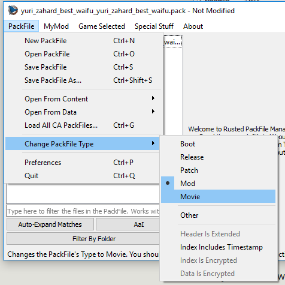

PackFile Menu

Here, we can find the basic actions:
New PackFile: Creates a new PackFile outtanowhere.Open PackFile: Opens a PackFile in RPFM.Save PackFile: Saves the changes done in a PackFile to disk.Save PackFile As: Saves the current PackFile with another name.Preferences: Open the Preferences window.Quit: Makes you enter in a lottery. Seriously.
And some more... specific ones:
Open From Content…/xxx.pack: Open the selected PackFile from the Content folder (Workshop mods) of the game. Requires the game's path to be configured.Open From Data…/xxx.pack: Open the selected PackFile from the Data folder of the game. Requires the game's path to be configured.Load All CA PackFiles: Creates a fake PackFile in memory and tries to load into it all the data from every Vanilla PackFile of the game. Keep in mind that this takes a while.Change PackFile Type: Allows you to change the open PackFile's Type and configure some options for it.
About the PackFile Types, it's what the game uses to load in order all the data of the game. There are the following types, in the order the game will load them:
Boot: Used by boot.pack. Not useful for modding. First to load.Release: Used by most of CA PackFiles. Not useful for modding.Pactch: Used by some CA PackFiles, specially in Shogun 2 and older games. Not useful for modding.Mod: Used by most mods. This is the one you'll mostly use.Movie: Used by some CA PackFiles and some specific mods. Useful for modding. Last to load.Other: Something for RPFM to categorize unrecognized types. Never use it.
There are also a few more options to configure a PackFiles under this menu:
Index Includes Timestamp: There is a timestamp, maybe a Last Modified Date in the index of the PackFile.Index Is Encrypted: The index of the PackFile is encrypted.Data Is Encrypted: The data of the PackFile is encrypted.Header Is Extended: The header of the PackFile is extended (only seen in arena).
About these options, just take into account that any PackFile with any of these options enabled will NOT BE RECOGNIZED as a mod by the launcher. And RPFM doesn't support saving PackFiles with Index Is Encrypted, Data Is Encrypted or Header Is Extended enabled.
And, if you don't enable Allow Editing of CA PackFiles, RPFM will not let you save Boot, Release or Patch PackFiles.
And with that, we finish the PackFile Menu. Next, the MyMod menu.